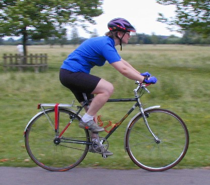

More bike articlesI told my boyfriend that I was going to make a fixed gear bike. "You're mad! Why?" is all he could reply, not seeing any attraction in a bike with only one gear, which doesn't even let you coast. I tried to explain that I thought it would help me be a stronger cyclist. Often, when a guy would blast up a hill way in front of everyone else, someone would look wistfully at his retreating figure and say "He's fit. He rides fixed." I saw myself blasting up that hill, and having others jealous of me. So I went ahead with the plan.
The obvious candidate for conversion was my touring bike. I hadn't been riding it recently because the low riding position put too much weight on my hands, making my elbows hurt (I've been suffering from tendonitis in my elbows for a few years now). I figured with a higher stem and some mountain bike bars, it could be ridable again.
So I started collecting parts. I got a Sovos Flip-Flop rear hub from Sheldon Brown in the US, along with a new 165mm chainset to go with it. I built the back wheel using an old Mavic MA40 rim, and it sat around for awhile while I completed my collection. I got a cheap MTB handlebar, some nice old cantilever brake levers, some cute squidgy red grips, and a nice shiny Profile MTB stem to go with my 1" headset. I was ready for the conversion.
After some installing and adjusting, there it was, looking old and beat up. After all, this was a very well used touring bike! I put on Shimano double-sided SPD pedals and went for a spin. My boyfriend insisted that I wear gloves and a helmet although I was only going around the block. I clipped one foot in and took off. Immediately I was startled: I'd attemped to coast while I got my other foot on the pedal. Not a promising start. But I was riding. I made it around the block safely. And then it was time to stop... I slowed down carefully, unclipped one foot, and stopped and put that foot down when the other (clipped in) foot was heading down. Success!
I rode it to work the next day with no real problems, and I've ridden it most days to work since then. I don't find the inability to coast to be any real problem as I've gotten used to pedalling all the time. The bottom bracket of the bike is quite high, so there's no danger of grounding the pedal on turns. Only in panic stops do I briefly forget to pedal, but the bike quickly reminds me and I let my legs follow the pedals around. When I stop, I just unclip whatever foot I feel like unclipping, stop wherever is appropriate using the brakes, and put my unclipped foot on the group while I put my weight on the foot that's still clipped in. This can result in me putting lots of weight on the pedal while it's in the back side of its stroke. Thus it is important that I remember to keep the brakes well on until I get my foot down, else the bike can start to go backwards! To get the pedal into the right place to start off again, I use a trick I got from Sheldon Brown: I hold the front brake and push forward on the handlebars. This lifts the rear wheel, so I rotate my clipped foot until it's at the right place.
Double sided SPD pedals are the best pedals to use. It is very difficult to get your feet into toe clips when you can't hold the pedal still, and if you have flat pedals it's hard to keep your feet on the pedals when you're going fast. The SPD pedals allow you to get attached by wiggling your foot around on the pedal, which can be done as the pedal is moving. If you don't get it the first time, your shoes (which usually have some tread on the outside) can sit on top of the pedal until the next time around.
Commuting and more. The bike is perfect for commuting. It's low to no maintenance, and since the chainring and rear cog both have high teeth and are in perfect alignment, they and the chain should last quite a long time. Also, since it's old and obviously lacks gears, it's much less attactive to theives, not to mention that they'd probably fall off if they tried to ride it. And, since I installed a Shimano hub dynamo in the front wheel I have light whenever I need it.
But it doesn't get used only for commuting. If I'm going on a road ride by myself, this is often the bike I take. (I can't go very fast on it, so if I need to keep up with speedy companions, I'll get out the racer.) There is a great lack of hills around here, so the single gear isn't much of a handicap. Anyway, it makes a challenge out of all the little rises that I'd normally just shift down and forget about. One of the things I like most about the bike is that it's so quiet. Usually you can hear the chain whirring through the derailleur and over the gears, but on this bike it goes about its business silently, and I listen more for the sounds of the wind and of birds calling.
And do I blast up the hills now, fulfilling my ambitions? Well, not really. But when I'm on the fixed, I don't have any other choice but to go up at a reasonable pace. Which is faster than most people with geared bikes would choose to go. So I suppose it's at least partly true!